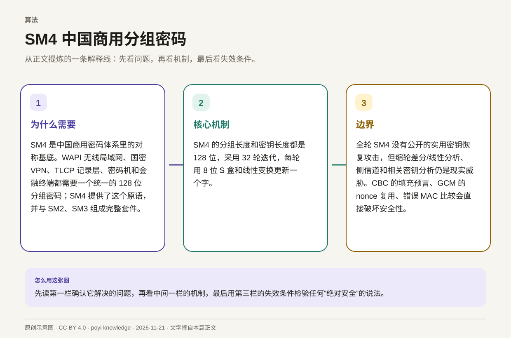
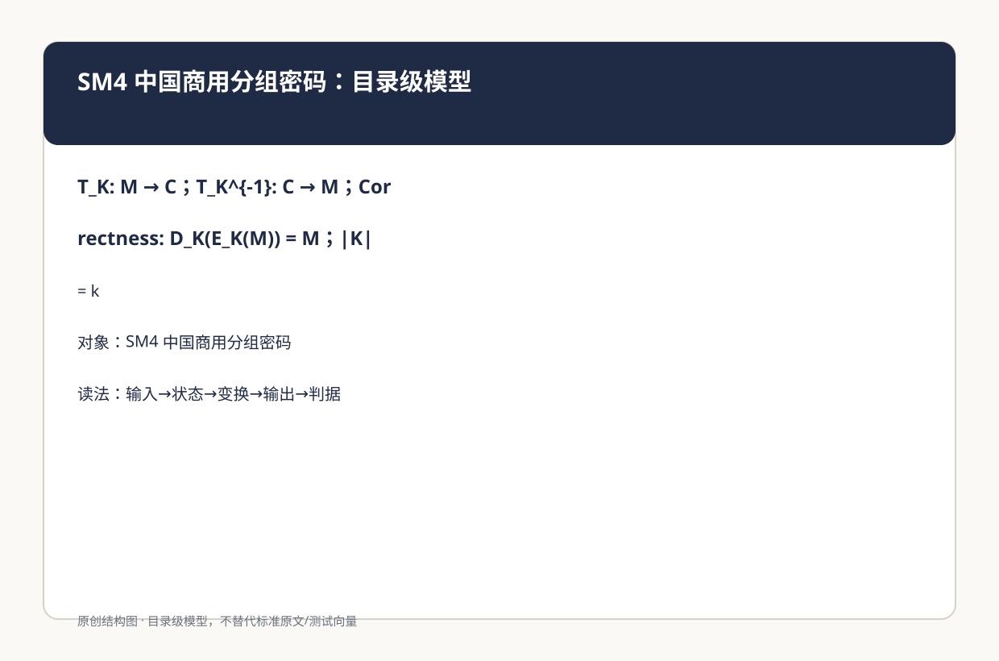

原理与机制
算法：SM4 中国商用分组密码（SM4）。### 128 位分组与 32 轮迭代
SM4 的分组长度和密钥长度都是 128 位，采用 32 轮迭代，每轮用 8 位 S 盒和线性变换更新一个字。明文写成四个 32 位字 X0、X1、X2、X3；每轮只计算一个新字：
X_{i+4} = X_i ⊕ T(X_{i+1} ⊕ X_{i+2} ⊕ X_{i+3} ⊕ rk_i)。T 先对四个字节分别过 8 位 S 盒，再做线性变换 L(B) = B ⊕ (B<<<2) ⊕ (B<<<10) ⊕ (B<<<18) ⊕ (B<<<24)。32 轮后做反序变换，得到四个密文字。### 密钥扩展与解密
密钥扩展也做 32 轮，把主密钥 MK 经系统参数 FK 和固定参数 CK 扩展成 32 个轮密钥；密钥扩展的线性变换换成 L’(B) = B ⊕ (B<<<13) ⊕ (B<<<23)。解密与加密使用同一结构，只把轮密钥逆序。### 工程含义
每轮只更新一个字，使加解密可以共用数据通路，硬件面积小；S 盒提供非线性，移位与 XOR 提供扩散。它的结构与 AES 的 SPN 不同，不能直接套用 AES 的指令或查表优化。

为什么重要
SM4 是中国商用密码体系里的对称基底。WAPI 无线局域网、国密 VPN、TLCP 记录层、密码机和金融终端都需要一个统一的 128 位分组密码；SM4 提供了这个原语，并与 SM2、SM3 组成完整套件。它的工程价值在于实现成本低：8 位 S 盒、32 位加法和移位即可，适合智能卡、嵌入式与硬件密码模块。它不是“更强的 AES”，而是另一套标准体系中的对称入口。
应用与实例
SM4 必须配合工作模式使用。常见组合是 SM4-CBC + HMAC-SM3、SM4-GCM、SM4-CTR；TLCP 使用 ECDHE_SM4_CBC_SM3、ECDHE_SM4_GCM_SM3 等套件。工程要求：128 位密钥、唯一 IV/nonce、CBC 先认证后解密或使用 EtM、GCM 不复用 nonce；不要把单块 ECB 直接用于结构化数据，也不要把 SM4 与 SM3 的密钥混用。

边界与攻击面
全轮 SM4 没有公开的实用密钥恢复攻击，但缩轮差分/线性分析、侧信道和相关密钥分析仍是现实威胁。CBC 的填充预言、GCM 的 nonce 复用、错误 MAC 比较会直接破坏安全性。实现边界：使用经过认证的密码模块和真随机数；S 盒查表要防缓存时序；CBC 填充校验必须常量时间；GCM 限制单密钥的消息数量；TLCP 部署优先选择带前向安全的 ECDHE 套件，并关闭降级回退。
历史与背景
SM4 的前身 SMS4 由吕述望等设计，2003 年作为 WAPI 国家标准 GB 15629.11-2003 的组成部分公开，2006 年由国家密码管理局单独发布，2012 年更名为 SM4 并发布 GM/T 0002-2012。2016 年 8 月发布 GB/T 32907-2016，2017 年 3 月实施；2021 年 6 月，ISO/IEC 18033-3 的 Amendment 1 纳入 SM4。这段历史留下两个常见混淆：SMS4 是旧名，SM4 既是算法名也是标准名；它最早为无线局域网设计，后来才成为通用商用分组密码。
技术参数与复算边界
该条目的形式模型是 (C=E_K(P;r),\qquad P=D_K(C))。输入：输入：SM4 中国商用分组密码的公开参数、密钥/随机数与消息；变量说明：P 明文，C 密文，K 密钥，r 随机化参数。 预期输出：按 SM4 中国商用分组密码 的规范执行后得到可验证的输出或可比较的优势界。 复算必须给出输入、步骤、输出和单位；示例只演示流程，不替代标准测试向量。
复杂度由密钥长度、分组/状态规模、轮数、随机数质量和敌手模型共同决定；参数越界、版本差异与实现侧信道都可能使公式结论失效。已登记限制：该条目只给出形式模型与可复算步骤，不声称已完成生产实现、侧信道认证或第三方安全评估。
参数与状态规模
公式 (C=E_K(P;r),\qquad P=D_K(C)) 的输入、输出和单位必须逐项登记；复算顺序为：1. 按算法规范编码输入 2. 在密钥控制下执行轮函数 3. 输出密文并检查长度与格式。
状态规模、密钥长度、分组长度和轮数决定复杂度；这些量不能从标题推断，必须以标准或实现文档为准。
逐步示例与核验
形式模型与复算步骤
[C=E_K(P;r),\qquad P=D_K(C)]
SM4 中国商用分组密码的公开参数、密钥/随机数与消息；变量说明：P 明文，C 密文，K 密钥，r 随机化参数。1.按算法规范编码输入。2.在密钥控制下执行轮函数。3.输出密文并检查长度与格式。边界：公式只覆盖已登记的参数与假设；参数取值、标准版本和实现细节仍以来源为准。
参考出处
- Wikipedia search entry for SM4 中国商用分组密码. https://zh.wikipedia.org/w/index.php?search=SM4%20%E4%B8%AD%E5%9B%BD%E5%95%86%E7%94%A8%E5%88%86%E7%BB%84%E5%AF%86%E7%A0%81
- Handbook of Applied Cryptography (Menezes, van Oorschot, Vanstone). https://www.cacr.math.uwaterloo.ca/hac/